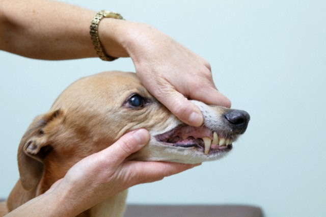

犬貓的牙齒斷裂，是臨床常見的口腔問題之一。貓咪的斷牙通常是犬齒斷裂居多，原因可能來自於打架，或是奔跑、跳躍時撞擊斷裂，而狗狗則多發生於咬硬物。
斷牙原因
- 外力造成：如車禍、墜樓、打架、玩玩具時太用力的拉扯
- 啃咬硬物：如骨頭、氂牛起司棒、鹿角、過硬的潔牙骨或玩具等等
預防
- 留意寶貝的活動：
避免貓狗在與其他動物互動時，有過於激烈及使用嘴巴玩耍的情況發生。 - 啃咬物判斷：
如果無法用手折彎這件東西，或無法用指甲在表面劃出刮痕，就代表它太硬了，不建議讓毛孩啃咬。
治療
牙齒斷裂的治療方式，以及評估拔除與否，要根據受損程度而定。
- 根管治療：
移除牙髓腔中的血管、神經與結締組織，清理乾淨後再將傷口封住，最後視情況用牙冠蓋住受傷的牙齒。 - 活髓治療：
僅將上層受感染的組織切除，覆蓋敷料以利底下的牙髓繼續生長，等牙髓成熟後再評估是否進行根管治療。 - 拔牙：
此為最後的手段，若上述兩種治療都無法達到效果或是牙齒受損過於嚴重才會選擇將牙齒拔除。
請飼主定期檢查毛孩口腔，確認毛孩牙齒的健康。觀察是否有以下跡象，例如磨牙、用腳抓嘴巴、臉部腫脹、拒絕被觸碰、吃東西只用一邊的牙齒來咬、在咀嚼過程中不停流口水、不願吃堅硬的食物、不再啃咬硬的零食或玩具等等。
如果持續不處理斷裂的牙齒，這個破口會成為細菌入侵的窗口，最終導致牙根完全被破壞、細菌進入血液，引發肝臟、腎臟的細菌感染、心臟瓣膜因菌塊堆積而關閉不全等嚴重全身性症狀。